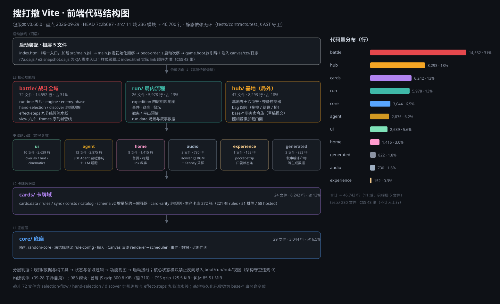
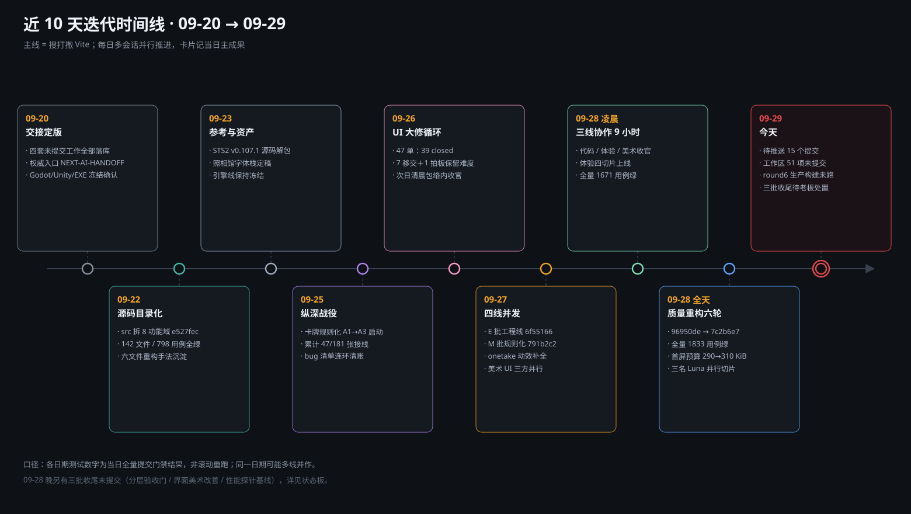
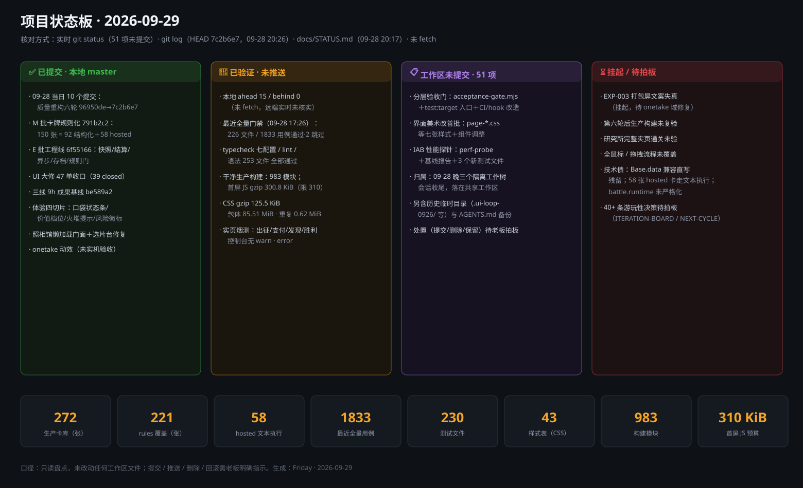

| 功能域 | 职责 | 文件 | 行数 | 占比 |
|---|---|---|---|---|
| battle/ | 战斗全域：runtime 五片、引擎、敌方阶段、选牌/发现纯规则、effect-steps 流水线、view 六片、序列帧 | 72 | 14,552 | 31.1% |
| hub/ | 基地局外：基地壳＋六页签、整备、仓库背包（bag 四片）、存档 base-* 命令族、照相馆门面 | 47 | 8,293 | 17.7% |
| cards/ | 卡牌数据/规则/schema/同步/目录，272 张生产卡库 | 24 | 6,242 | 13.4% |
| run/ | 局内：四层地图、事件、商店、祭坛、撤离 | 26 | 5,978 | 12.8% |
| core/ | 底座：随机、冻结规则源、输入、Canvas 渲染、事件、数据、诊断 | 29 | 3,044 | 6.5% |
| agent/ | SDT.Agent 结构化观察/动作、自动游玩、LLM 适配 | 13 | 2,875 | 6.2% |
| ui/ | 全局 UI：overlay / hud / cinematics | 10 | 2,639 | 5.6% |
| home/ | 首页、标题、ink 叙事 | 8 | 1,415 | 3.0% |
| generated/ | 叙事编译等生成产物 | 3 | 822 | 1.8% |
| audio/ | Howler 双 BGM、Kenney 采样、程序化回退 | 3 | 730 | 1.6% |
| experience/ | 随身口袋状态条（体验线四切片之一） | 1 | 152 | 0.3% |
| 根层装配 | main.js · boot-order.js · game.boot.js ＋ QA 入口 r7a.qa.js / e2.snapshot.qa.js | 5 | — | — |
| 合计 | 静态依赖无环（contracts AST 守卫），构建 983 模块 | 241 | ≈46,700+ | 100% |
配套：CSS 样式表 43 张（按 index.html 实际 link 顺序级联）· 测试 230 个 .test.js 文件（最近全量门禁 226 文件 / 1833 用例通过、2 跳过，09-28 17:26）· 另有 game/tools/ 下 agent-*.mjs 批量实验工具与 scripts/ 门禁脚本。
battle/battle.engine.js1,570 行battle/battle.resolution.js1,191 行battle/battle.layers.js729 行battle/battle.aim.js698 行battle/battle.view.js635 行battle/battle.frames.js537 行battle/combat.js514 行battle/battle.vfx.js455 行battle/battle.enemy-phase.js439 行battle/battle.core.js425 行battle/battle.bag.js392 行battle/effect-steps.m2.js366 行battle/effect-steps.kills.js364 行battle/battle.lifecycle.js363 行battle/effect-steps.damage.js341 行battle/battle.exec-play.js281 行battle/battle.anim.js278 行battle/battle.selection-flow.js251 行battle/battle.discover-flow.js244 行battle/effect-steps.curse.js235 行battle/battle.equipment.js218 行battle/battle.snapshot.js212 行battle/effect-verbs.js200 行battle/battle.preview.js193 行battle/battle.overlays.js183 行battle/effect-steps.recovery.js165 行battle/effect-steps.audit.js155 行battle/battle.triggers.m2.js141 行battle/battle.rules.js136 行battle/battle.card-inspection.js123 行battle/runes.js114 行battle/battle.runtime.effects.js113 行battle/effect-steps.m1.js113 行battle/battle.staged-playback.js111 行battle/effect-steps.js110 行battle/effect-steps.deck.js108 行battle/battle.discover-state.js106 行battle/effect-steps.gates.js100 行battle/battle.runtime.session.js96 行battle/battle.clock.js93 行battle/effect-steps.ctx.js93 行battle/battle.feedback.js92 行battle/battle.hover.js91 行battle/effect-steps.rules.js83 行battle/battle.hand-selection.js77 行battle/battle.target-session.js77 行battle/battle.actions.js74 行battle/battle-loader.js69 行battle/battle.effects.js67 行battle/battle.card-cost.js64 行battle/battle.state.js59 行battle/battle.runtime.piles.js55 行battle/battle.action-runner.js54 行battle/battle.runtime.interaction.js51 行battle/battle.discover-candidates.js49 行battle/battle.hand.js49 行battle/effect-steps.tail.js43 行battle/battle.rule-guard.js35 行battle/battle.execution-session.js34 行battle/battle.piles.js32 行battle/battle.piles.view.js32 行battle/battle.animation.js31 行battle/battle.hosted.js31 行battle/battle.intents.js30 行battle/battle.pace.js28 行battle/battle.runtime.presentation.js27 行battle/battle.attack-cues.js21 行battle/battle.intent.js21 行battle/battle.deck.js19 行battle/hand-cost-patterns.js17 行battle/hosted-catalog-index.js13 行battle/battle.runtime.js8 行hub/game.bag.js722 行hub/game.hub.pages.js654 行hub/game.cardslib.page.js642 行hub/base.js624 行hub/game.hub.js386 行hub/game.cardslib.designer.js374 行hub/meta.js365 行hub/game.bag.settle.js360 行hub/game.hub.depart.js358 行hub/extraction.commands.js305 行hub/battle-settlement.commands.js262 行hub/collection.commands.js228 行hub/game.notes.js226 行hub/game.bag.drag.js196 行hub/nest-settlement.commands.js187 行hub/game.storage.js185 行hub/recovery.commands.js179 行hub/recoverable-pair.js147 行hub/game.hub.preparation.js141 行hub/terminal.commands.js139 行hub/preparation.commands.js137 行hub/base.commands.js128 行hub/base-state.js112 行hub/game.cardslib.photo-fps.js96 行hub/game.store.js96 行hub/game.cardslib.js95 行hub/run-save-validation.js92 行hub/versioned-slot-reader.js83 行hub/base-economy.js77 行hub/game.bag.rules.js71 行hub/preparation.view.js68 行hub/base-departure.commands.js64 行hub/battle-victory-progress.js58 行hub/base-progression.commands.js56 行hub/game.cardslib.art-warm.js53 行hub/meta-progression.js50 行hub/game.cardslib.common.js49 行hub/base-mutation.js42 行hub/base-elapsed.commands.js41 行hub/commands.shared.js41 行hub/game.cardslib.photo-props.js41 行hub/base-pet-egg.commands.js39 行hub/preparation.sources.js25 行hub/photo-studio-presentation.js19 行hub/bag-return-hook.js13 行hub/game.hub.bridge.js8 行hub/game.bag.bridge.js6 行cards/card-rules.schema.js1,227 行cards/cards.sync.js1,097 行cards/cards.data.js739 行cards/cards.rules.js348 行cards/cards.js306 行cards/cards.sync.m3.js274 行cards/cards.sync.m5.js268 行cards/cards.sync.m2.js233 行cards/card-rules.capability.js228 行cards/cards.sync.m6.js193 行cards/cards.sync.m4.js185 行cards/cards.sync.m1.js167 行cards/cards.sync.m9.js155 行cards/cards.view.js146 行cards/cards.sync.m7.js129 行cards/cards.sync.m8.js121 行cards/cards.sync.m11.js99 行cards/cards.sync.m10.js98 行cards/card-photo-notes.js59 行cards/mech-sentences.js54 行cards/cards.consts.js47 行cards/cards.catalog.js41 行cards/card-rarity.js29 行cards/card-render-context.js23 行run/game.run.altar.js959 行run/game.run.flow.js845 行run/game.nest.js654 行run/game.session.js558 行run/game.run.shop.js443 行run/chests.js426 行run/game.run.scenes.js346 行run/map-generator.js288 行run/map-snapshot.js180 行run/game.run.dev.js177 行run/game.session.death.js167 行run/game.session.bag.js127 行run/game.session.board.js109 行run/expedition.view.js104 行run/game.session.map.js96 行run/lab.ending.js95 行run/map-graph.js82 行run/game.session.kernel.js75 行run/encounter-selector.js52 行run/extraction-preview.js52 行run/game.run.data.js47 行run/encounter-meta.js36 行run/game.session.modes.js28 行run/layeredMap.js25 行run/game.run.js23 行run/game.session.browser.js10 行core/renderer.js606 行core/art.js575 行core/renderer.icons.js289 行core/camera.js161 行core/perf-probe.local.js159 行core/diagnostics.local.js134 行core/icons-bitmap.js122 行core/rule-config.js120 行core/motion.js76 行core/input.js71 行core/random.js68 行core/render-scheduler.js66 行core/renderer.primitives.js66 行core/event-bus.js65 行core/motion-primitives.js57 行core/map-reveals.js47 行core/characters.js46 行core/data-loader.js39 行core/random-core.js37 行core/rules.js36 行core/mapData.js35 行core/renderer.fx.js35 行core/shared.js31 行core/notes.js30 行core/performance-budgets.js28 行core/sdt-facade.js23 行core/node-info.js20 行core/storage.js16 行core/asset-url.js15 行agent/agent.policy.js873 行agent/agent.runner.js530 行agent/agent.state.js383 行agent/agent.recorder.js191 行agent/agent.llm.js181 行agent/agent.surface.js119 行agent/agent.console.js117 行agent/agent.weights.js115 行agent/agent.data.js108 行agent/agent.stats.js96 行agent/agent.protocol.js94 行agent/agent.js53 行agent/agent.turbo.js28 行ui/game.menu.js1,125 行ui/ui.js471 行ui/overlay.js351 行ui/hud.js148 行ui/cinematics.js128 行ui/term-tips.js123 行ui/feedback.local.js91 行ui/route-overlay.js78 行ui/quick-nav.js74 行ui/ui-scale.js60 行home/home.scene.js617 行home/home.visuals.js331 行home/home.commands.js179 行home/story.last-lamp.js111 行home/narrative.js77 行home/home.presenter.js40 行home/home.catalog.js35 行home/story.commands.js33 行generated/art-manifest.js490 行generated/thumb-manifest.js332 行generated/narrative-events.js3 行audio/sound.js595 行audio/sound.scape.js102 行audio/sound.policy.js36 行experience/pocket-strip.js153 行game.boot.js719 行e2.snapshot.qa.js113 行main.js46 行r7a.qa.js26 行boot-order.js24 行expedition-library.css2,655 行winter.css1,784 行page-rewards-bag-help.css736 行battle.css683 行scenes.css658 行overlays.css546 行expedition.css493 行page-ach.css486 行page-settings.css469 行page-deploy.css451 行base.css414 行page-hub.css406 行page-stash.css361 行cards.css359 行page-shop.css350 行page-slot-select.css350 行hub.css306 行page-battle-ui.css305 行title-p0.css296 行page-cardforge.css286 行page-expedition-hud.css273 行page-upgrade.css266 行expedition-roster.css262 行page-cardslib.css253 行expedition-shop.css243 行expedition-hub.css240 行page-events.css237 行page-classes.css212 行card-v3.css206 行photo-studio-craft.css194 行expedition-inventory.css191 行expedition-battle.css190 行photo-studio-mounts.css119 行expedition-rewards.css116 行pocket-strip.css108 行experience-loot.css92 行lab-ending.css92 行preparation.css91 行expedition-map.css84 行ui-scale.css66 行page-datapage.css31 行combat-feedback.css25 行home-scene.css2 行本页及三张图为 2026-09-29 的一次性盘点产物；后续状态以实时 git 与 docs/STATUS.md 为准。